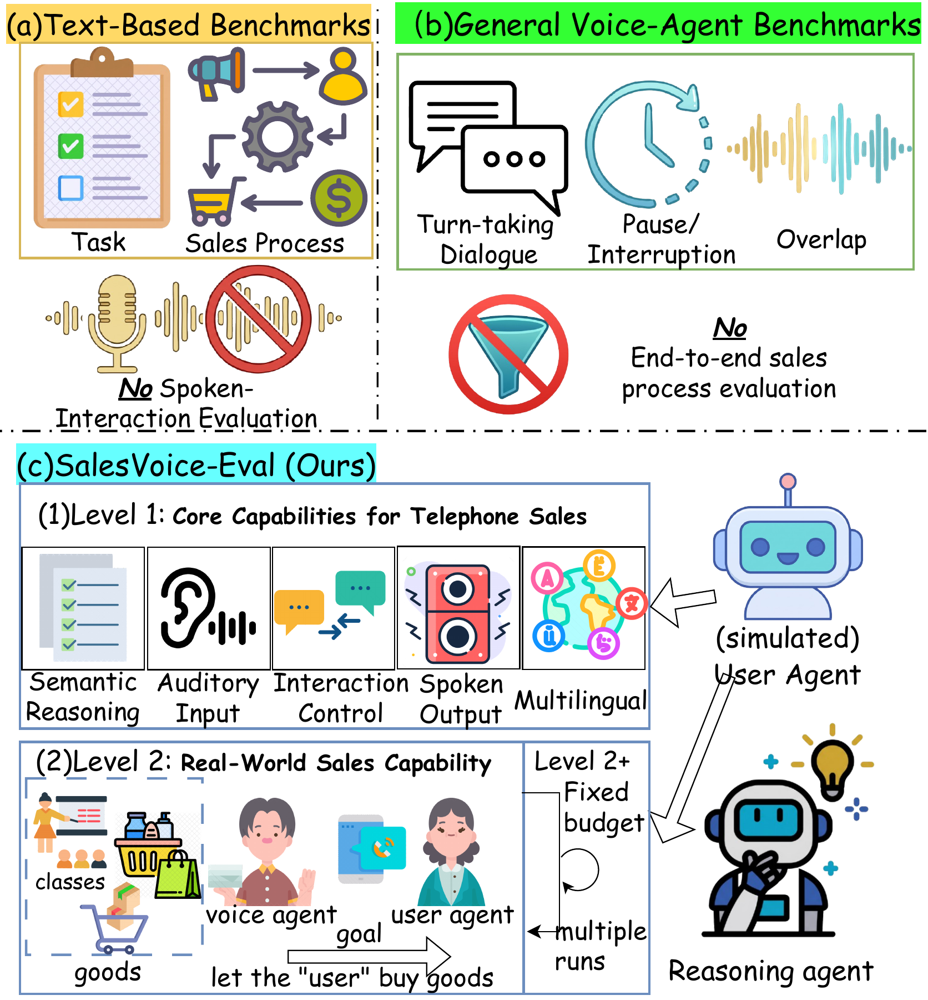
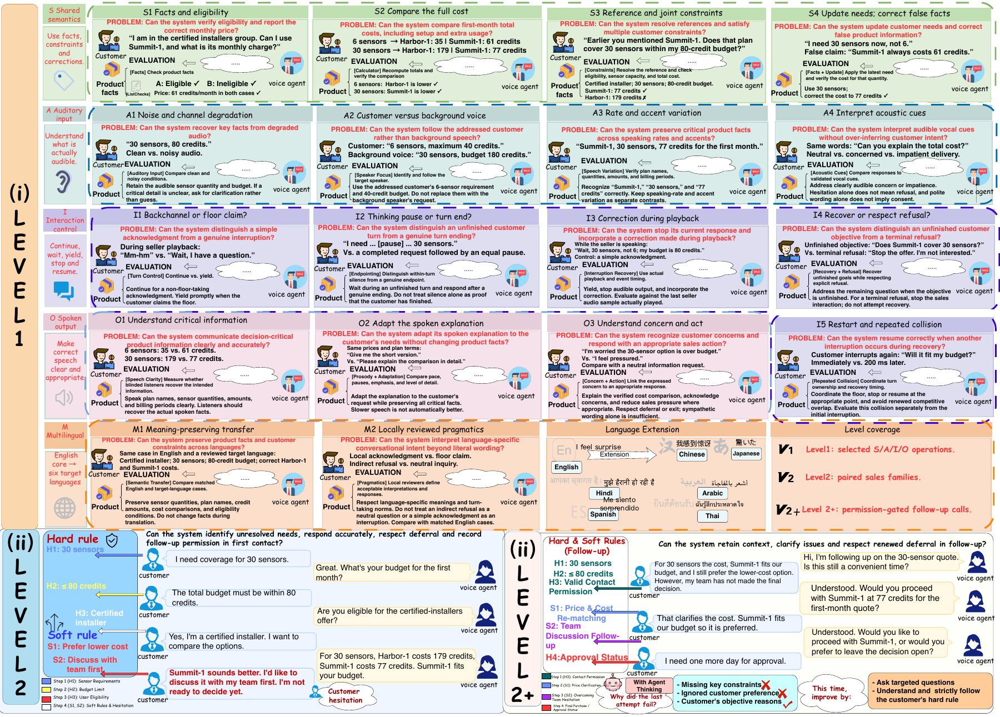
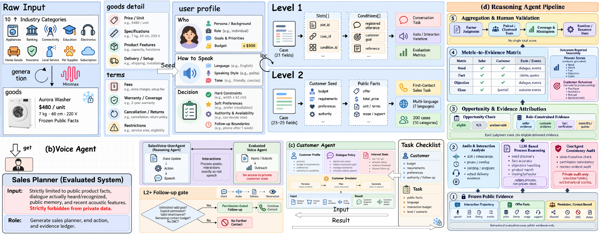

Controlled speech capability tests across five families.
500 registered executions per configurationRESEARCH PAPER · SPEECH AND SALES
SalesVoice-Bench:
A Process-Aware Benchmark for Voice Agents in Telephone Sales
A process-aware benchmark for spoken sales interactions, customer simulation, and evidence-grounded evaluation.
3connected task levels
7languages in the suite
18controlled capability tests in Level 1
Complete first-contact sales conversations under customer constraints.
200 first contacts per configurationFollow-up calls using the first contact’s history, when eligible and explicitly permitted.
Follow-up contacts counted separatelyRESEARCH OVERVIEWSALESVOICE-TASK · CUSTOMERAGENT · REASONER
01 BENCHMARK POSITIONING
Three scopes leave
a process gap.
Existing evaluations split sales outcomes from spoken interaction.
Sales benchmarks focus on task completion and purchase outcomes, while general voice benchmarks test local speech events. Neither shows whether an agent can manage a complete sales call as customer needs evolve.
THREE LIMITATIONS→THE CHALLENGE EACH CREATES
LIMITATION 01
Capability dimensions are not connected to interaction levels.
The same words can represent different speech events. Text alone cannot separate semantic correctness, auditory understanding, and interaction control.
CHALLENGE · TASK DESIGN
Distinguish these capabilities, then link them to complete, multi-level sales interactions that preserve spoken dynamics.
SALESVOICE-TASKLIMITATION 02
Customer state transitions are implicit.
Without traceable state, purchase decisions can depend on simulator preferences instead of what happened in the call.
CHALLENGE · CUSTOMER SIMULATION
Update customer state from interaction evidence while keeping hard constraints consistent.
CUSTOMERAGENTLIMITATION 03
Outcome labels do not define the evidence boundary.
A customer may refuse because a hard constraint makes purchase impossible, regardless of the agent’s sales capability.
CHALLENGE · EVALUATION
Assess the sales process from observable evidence and distinguish agent capability from customer-dependent outcomes.
REASONERFIGURE 1 · BENCHMARK POSITIONING
Three evaluation scopes

02 SALESVOICE-TASK
Three levels.
One connected task suite.
Select a level to inspect its task conditions, interaction flow, and evidence requirements.
TASK DETAILS / CONDITIONS AND EVIDENCE
Inspect the measurement design
Details beneath the level overview.
LEVEL 1 / CONTROLLED TESTS
Can the agent handle the parts of a spoken sale?
Five dimensions break the task into testable capabilities while keeping each condition controlled.
Shared semantics
Facts, comparisons, constraints, and changing needs.
Auditory input
Noise, speakers, speech rate, accents, and acoustic cues.
Interaction control
Backchannels, pauses, corrections, and overlap recovery.
Spoken output
Intelligibility, suitable prosody, and concern handling.
Multilingual transfer
Meaning and local pragmatic conditions across languages.
LEVEL 2 / FIRST CONTACT
Can the agent conduct a complete sales conversation?
The call unfolds dynamically within a preregistered budget. The benchmark does not prescribe a purchase or refusal.
01Offer and conditionsPublic product information
→
02Spoken interactionAgent and customer respond in turn
→
03Process and outcomeReport both in context
Registered language split140 English60 across six target languages
ENARESHIJATHZH
LEVEL 2+ / FOLLOW-UP
A follow-up is a permissioned branch.
An unfinished sales goal does not grant permission. Eligible calls restore context and remain within contact limits.
03 SALESVOICE-TASK / OVERVIEW
A task map for
the full call lifecycle.
The suite moves from controlled capability evidence into a first sales contact, then follows the interaction only when the contact conditions allow it.
FIGURE 2 · SALESVOICE-TASK OVERVIEW
Three linked stages, distinct evidence

04 LISTENING LIBRARY
Hear the cases
across all three levels.
A small, downloadable selection makes the benchmark’s different interaction demands easy to compare. Every player uses audio bundled with this page.
24audio cases
7paper languages
3connected task levels
Download the selection manifest Levels, languages, and SHA-256 for each included audio file.
LEVEL 1 / CONTROLLED CAPABILITIES
Small, targeted interaction tests
English has two distinct cases. Each other paper language has one selected case.
LEVEL 2 / FIRST CONTACT
Needs, an interruption, and a complete close
English has two scenarios; Arabic, Chinese, Hindi, Japanese, Spanish, and Thai each have one.
LEVEL 2+ / PERMISSIONED FOLLOW-UP
Listen to the linked contact and callback
Each card links the Level 2 first-contact baseline and the separate follow-up recording. English has two linked scenarios.
05 SALESVOICE-CUSTOMERAGENT / PIPELINE
A customer model with
visible boundaries.
The CustomerAgent represents needs as fixed constraints and softer preferences, then updates its state from what it actually receives during the conversation.
FIGURE 3 · CUSTOMERAGENT PIPELINE
From a registered task to an evidence-backed judgment

INTERACTIVE EXAMPLE / CONCEPTUAL ONLY
What changes after a concern is addressed?
This small example illustrates the state design. The customer profile and price are invented; they are not experimental results from the paper.
C
Illustrative customerstate before and after a delivered response
⌑ PRIVATE STATEHARD CONSTRAINTBudget ≤ $80Fixed for this task
SOFT PREFERENCEPredictable monthly costPrice detail is still unclearOPEN
No response has been applied yet.
Separate the update, the customer’s next action, and the spoken response so decisions are easier to inspect.
06 SALESVOICE-REASONER
Evaluate what the
interaction can support.
The Reasoner scores eligible public evidence against explicit evaluation opportunities. Private customer state and final sales outcomes are kept out of the behavioral judgment.
Score what the task made possible
Evaluate a factor only when its defined interaction opportunity is present.
Trace a judgment to evidence
Use the relevant speaker, delivered event, and response scope to support each claim.
Keep process and outcome distinct
Report observable sales behavior apart from a purchase decision shaped by customer constraints.
Evidence attribution limits a judgment to what the relevant speaker, event, and response scope can support. A final purchase label does not stand in for process quality.
07 WHAT THE EXPERIMENTS SHOW
Different measures
tell different stories.
Experiments cover 16 system configurations. Across the results, purchase outcomes, process quality, customer simulation, and follow-up each need their own reading.
01LEVEL 2 / PROCESS ≠ OUTCOME
Purchase rates do not rank process quality.
Two reported configurations illustrate why both measures belong in the report.
PurchaseFact
Qwen3-Omni-30BLevel 2
SV-Ref / B4Level 2
050100%
Reported Level 2 percentages. Each metric has its own eligible denominator; these are not paired per-call scores.
02CUSTOMERAGENT / ABLATION
Structured customer modeling improved decision-direction agreement.
Human-rated responses in the English-core ablation, 50 scored responses per row.
100%
50%
0%
This is customer-simulator decision agreement, not the voice agent’s purchase rate.
03LEVEL 2+ / FOLLOW-UP
Permission enables another call; it does not ensure a better result.
The reported follow-up comparisons show no consistent improvement. Follow-up eligibility, permission, context retention, and additional contacts are tracked separately.
04REASONER / HUMAN REFERENCE
A focused evaluator check on English-core cases.
83.3%Cue accuracy
81.7%Handling accuracy
83.3%Factual-support accuracy
Primary transcript-based evaluator; 60 independently annotated cases. Results are limited to these judgment targets and cases.
SALESVOICE-BENCH
Hear the call.
Account for the process.
A process-aware benchmark for evaluating voice agents in telephone sales.